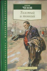

<!-- Модальное окно -->
<div class="modal fade" id="exampleModal" tabindex="-1" aria-labelledby="exampleModalLabel" aria-hidden="true">
  <div class="modal-dialog modal-dialog-scrollable">
    <div class="modal__content">
      <div class="modal-header">
        <h5 class="modal-title" id="exampleModalLabel">Заголовок модального окна</h5>
        <button type="button" class="btn-close" data-bs-dismiss="modal" aria-label="Закрыть"></button>
      </div>
      <div class="modal-body">
        <figure class="figure">
          
          <figcaption>А.П. Чехов</figcaption>
        </figure>
        <article>
          Это была длинная процедура. Сначала Пашка шел с матерью под дождем то по скошенному полю, то по лесным тропинкам, где к его сапогам липли желтые листья, шел до тех пор, пока не рассвело. Потом он часа два стоял в темных сенях и ждал, когда отопрут дверь. В сенях было не так холодно и сыро, как на дворе, по при ветре и сюда залетали дождевые брызги. Когда сени мало-помалу битком набились народом, стиснутый Пашка припал лицом к чьему-то тулупу, от которого сильно пахло соленой рыбой, и вздремнул. Но вот щелкнула задвижка, дверь распахнулась, и Пашка с матерью вошел в приемную. Тут опять пришлось долго ждать. Все больные сидели на скамьях, не шевелились и молчали. Пашка оглядывал их и тоже молчал, хотя видел много странного и смешного. Раз только, когда в приемную, подпрыгивая на одной ноге, вошел какой-то парень, Пашке самому захотелось также попрыгать; он толкнул мать под локоть, прыснул в рукав и сказал:
        </article>
      </div>
      <div class="modal-footer">
        <button type="button" class="btn btn-secondary" data-bs-dismiss="modal">Закрыть</button>
      </div>
    </div>
  </div>
</div>